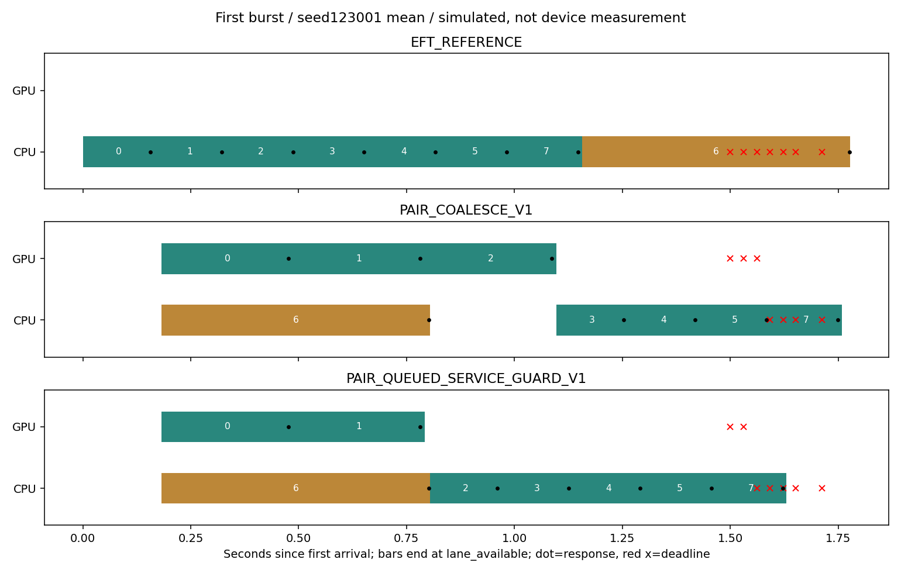

같은 실패 부하의 사후 보호계층. 기존 정책/물리모형 불변. 새seed는 같은 부하분포 PC 확인이며 미래 도착/실기기 기한 보장 아님.

| 자료 | 정책 | 기준 | 기한충족 | 분모 | ΔJ | Δ최고AP | Δ긴급P95 ms |
|---|---|---|---|---|---|---|---|
| reproduction | PAIR_COALESCE_V1 | EFT_REFERENCE | 272 | 288 | -0.415970 | 0.235339 | 507.474028 |
| reproduction | PAIR_QUEUED_SERVICE_GUARD_V1 | EFT_REFERENCE | 288 | 288 | -0.430954 | 0.188893 | 371.354582 |
| reproduction | PAIR_QUEUED_SERVICE_GUARD_V1 | PAIR_COALESCE_V1 | 288 | 288 | -0.014983 | -0.046445 | -136.119446 |
| fresh | PAIR_COALESCE_V1 | EFT_REFERENCE | 270 | 288 | -0.526613 | 0.276236 | 561.060049 |
| fresh | PAIR_QUEUED_SERVICE_GUARD_V1 | EFT_REFERENCE | 288 | 288 | -0.560587 | 0.225968 | 419.674792 |
| fresh | PAIR_QUEUED_SERVICE_GUARD_V1 | PAIR_COALESCE_V1 | 288 | 288 | -0.033974 | -0.050268 | -141.385257 |
J 0–120초/AP 35–180초. 새로운 장치 관측/공동절감 PASS 아님.
판독·제약·재현 · 원 실패16요청 분해 · 거부 경계